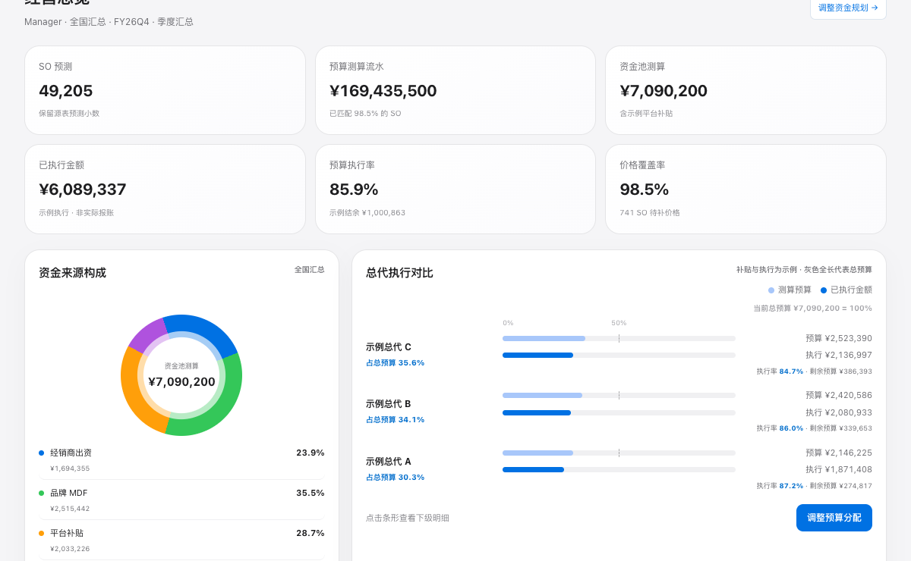

02 / CHANNEL PLANNING
渠道预算与资金规划：
从总额测算到经销商执行视图
围绕“预算从哪里来、分配到哪里、能否执行”组织管理视图，将资金来源、经销商计划、品类结构和周度进度放在可核对的框架里。
业务问题
预算管理需要同时看总额和可执行性。经销商提报额并不等于最终支出；总使用率也可能被计划外支出抬高，掩盖原计划执行不足。
与此同时，产品价格、销售预测和不同资金来源口径需要逐层核对，实际缺失时不能把测算结果写成已发生金额。
我完成的工作
- 整理预测、价格与经销商维度
对齐产品映射与预算单价口径，保留缺失、回退与异常标记，并核对周度、月度和季度汇总。
- 建立资金构成与多维下钻
拆解经销商出资、品牌支持和平台资金，支持按总代、经销商、品类与周期查看预算构成。
- 把 MDF 提报转化为情景测算
结合执行率与安全垫估算所需提报额，先检查预算覆盖，再比较产品结构；配合批量校验、汇总与报表导出。
- 区分计划、实际与模拟
保留实际值缺失状态，提供周度滚动视图、Offer 方案编辑及版本对比，让输入假设与执行结果有明确边界。
交互演示

这些工具属于同一预算管理工作主线，但演示页面之间未连接数据管道。经销商、费率和经营数值均为合成示例；ROI 是比值指标，不表示因果投入回报。
交付价值与边界
为运营负责人提供了从资金总额到经销商、品类与周度执行的查看路径，并把缺失数据、预算覆盖和假设参数展示出来，支持后续核对与讨论。
预算测算属于决策支持；演示中的分配结果和执行进度不代表真实审批、真实支出或已经实现的业务改善。